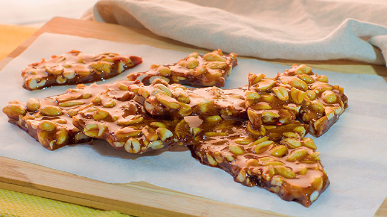
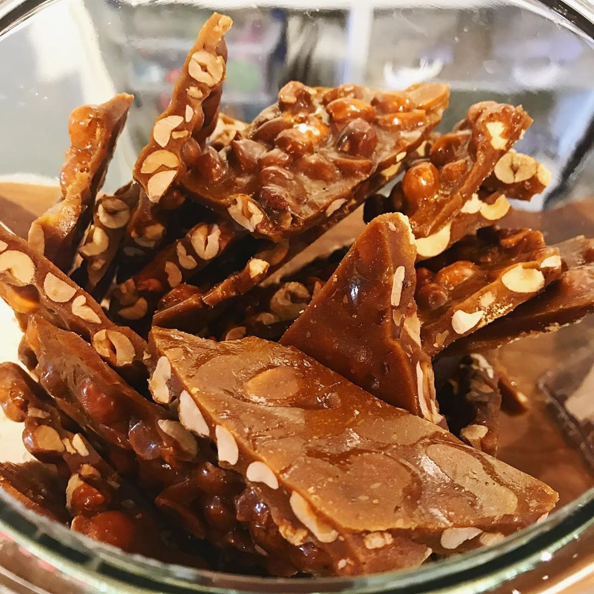

This is the traditional Panutsa recipe that uses sugar, glutinous rice and peanuts. It's cooked over low heat until it thickens and forms a sticky, gooey consistency.
Panutsa With Peanut

It is a traditional sweet from Philippines that is similar to traditional Panutsa but with a stronger peanut flavor and a slightly different texture
Panutsa With Chocolate

This variation adds cocoa powder or melted chocolate to the classic recipe, which gives it a chocolatey flavor.
About Us
Our Website introduce simple products of Batangas city like Kapeng barako, Lomi and Atchara this website will give you a few information for that products and as we beginner web developer we try our best to give you a best quality of website and some interactive menu and buttons.